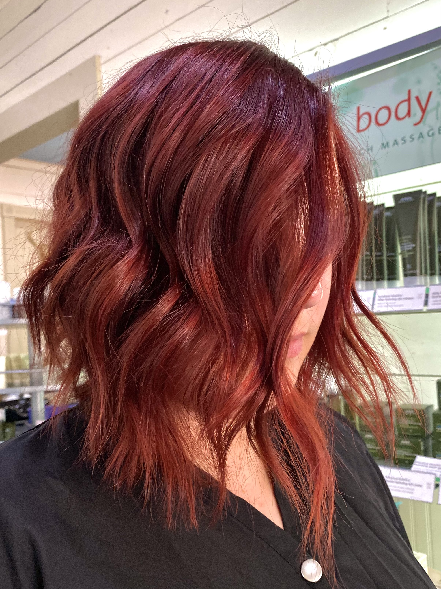
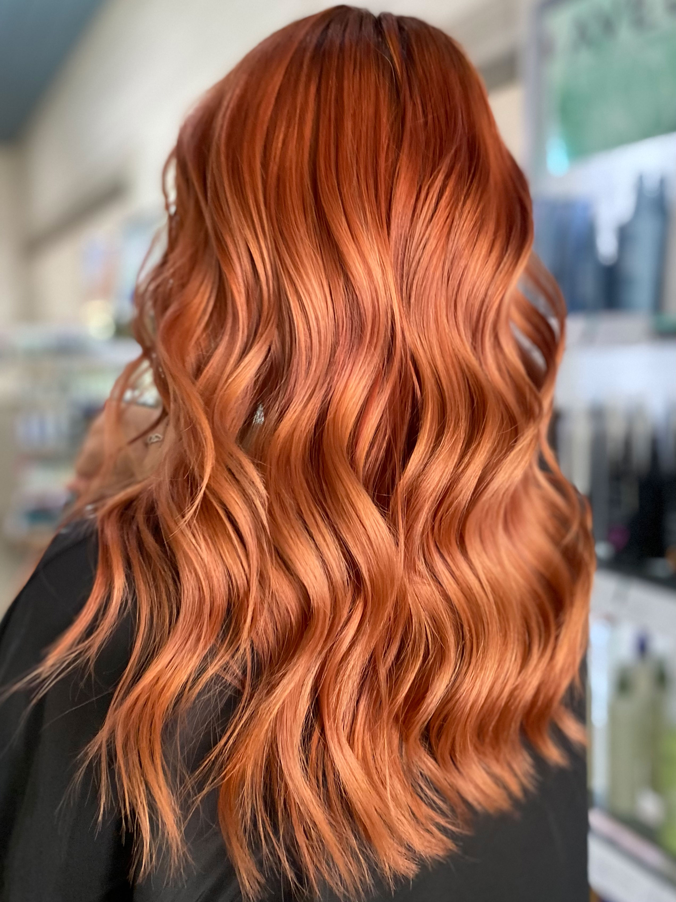
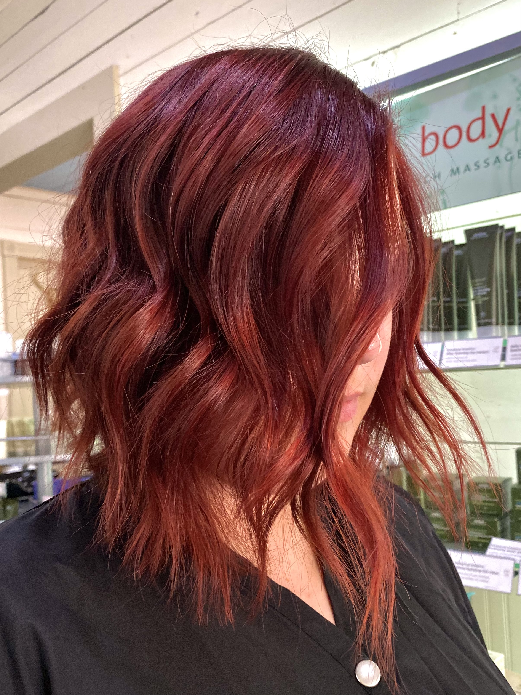
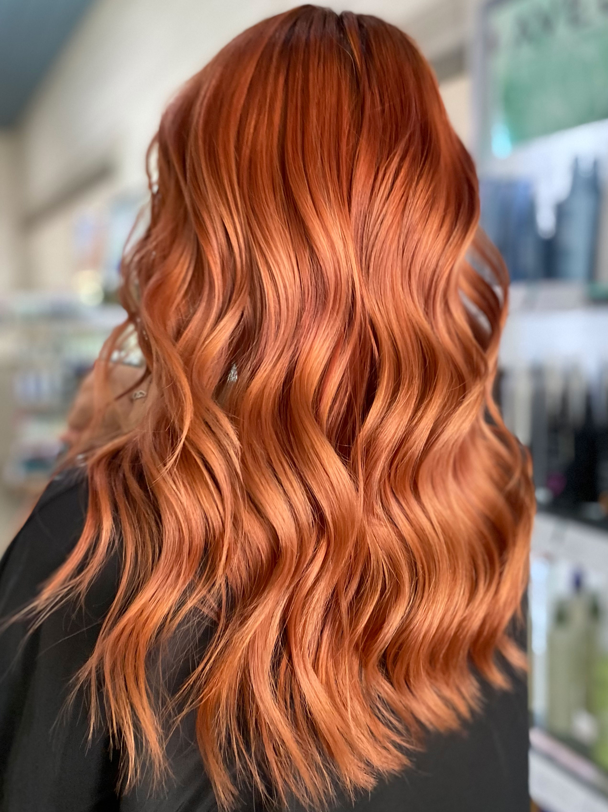

For touch up appointments I recommend these time frames! Please email, text or call the salon if you have any questions.
| Hair service | Maintance appointment | Sequence ideas |
|---|---|---|
| Highlights | 4 - 6 Weeks, ask for a partial | Partial, partial, full... etc |
| Balayage/Foilyage | 6 - 12 Weeks, ask for a partial | Partial 2-3x, full... etc |
| Root color/Grey coverage | 4 - 5 Weeks | Same everytime |
| Vivid/Fun Colors | 4 - 5 Weeks for faded touch up | Same unless bleaching/changing color |
| Bleach on scalp | 4 Weeks, very important | Same, no more than 3/4in' root |